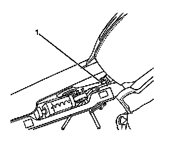
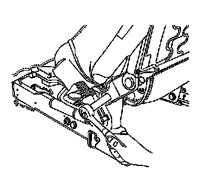
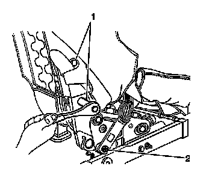

Front Seat Back Frame Replacement
Front Seat Back Frame Replacement
Removal Procedure
Caution: Refer to SIR Caution (SIR Caution) .
1. Remove the front bucket seat. Refer to Bucket Seat Replacement (Bucket Seat Replacement) .
2. Remove the seat cushion from seat. Refer to Front Seat Cushion Replacement (Front Seat Cushion Replacement) .

3. Remove the push-in retainer (1) from the trim covers.
4. Remove the trim covers.
5. Remove the seat back cover and pad. Refer to Front Seat Back Cushion Cover and Cushion Pad Replacement (Front Seat Back Cushion Cover and Cushion Pad Replacement) .
6. Remove the front seat belt assembly. Refer to Front Seat Belt Replacement (Front Seat Belt Replacement) .

Important: Note the electrical wiring routing during disassembly in order to ensure proper electrical wiring routing during reassembly.
7. Disconnect and remove the remaining electrical connectors are attached to the seat back frame.

8. Remove the bolt retaining the seat back frame to the riser.

9. Remove the bolts (1) retaining the seat back frame to the recliner.
10. Lift up on the seat back frame in order to disengage the seat back from the recliner.
Installation Procedure
1. Slide the seat back frame down into the recliner and align the fasteners holes.
Notice: Refer to Fastener Notice (Fastener Notice) .
2. Install the seat back to recliner bolts (1).
Tighten the bolts to 52 N.m (38 lb ft).
3. Install the seat back to riser bolt (1).
Tighten the bolt to 35 N.m (26 lb ft).
4. Install the front seat belt assembly. Refer to Front Seat Belt Replacement (Front Seat Belt Replacement) .
5. Install the seat back cover and pad. Refer to Front Seat Back Cushion Cover and Cushion Pad Replacement (Front Seat Back Cushion Cover and Cushion Pad Replacement) .
6. Install the trim covers.
7. Install the push-in retainer (1) to secure the trim cover.
8. Install the front seat cushion. Refer to Front Seat Cushion Replacement (Front Seat Cushion Replacement) .
9. Route and connect the electrical connectors to the seat back.
10. Install the front seat. Refer to Bucket Seat Replacement (Bucket Seat Replacement) .